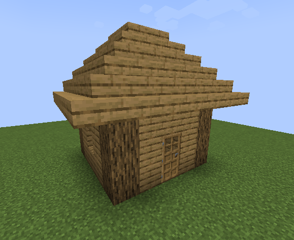

Découvrez les bases pour bien démarrer votre aventure.
réalisé dans le cadre du cours de 4TTi - WEB
| Ressource | Utilité | Obtention |
|---|---|---|
| Bois | Construction, crafting, Carburant | Arbre, Structure |
| Pierre | Construction, crafting | Sol, Structure, générateur |
| Terre | Construction | Sol, Structure |
| Charbon | Carburant, crafting | Sol, Structure |
| Fer | Crafting | Sol, Structure |